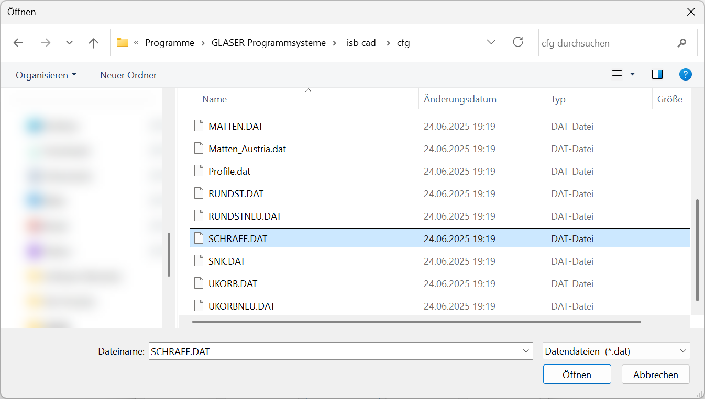
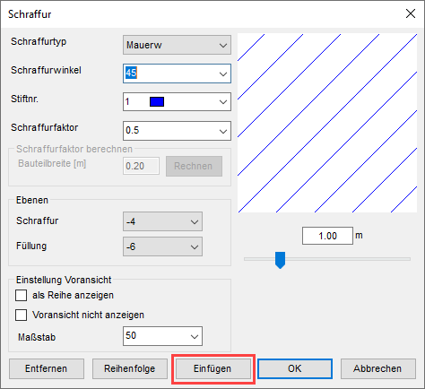
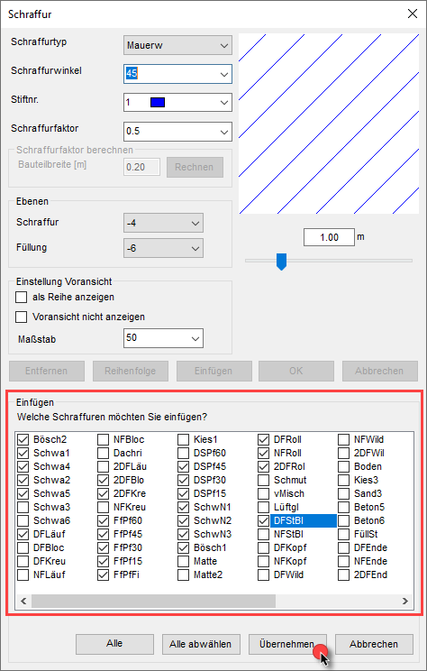

")
") oder
oder
Sie können die Konfigurationsdatei für Schraffuren (SCHRAFF.DAT) um weitere Schraffuren ergänzen. Nach der Dateiauswahl werden in einer Liste die Schraffurtypen aufgeführt, die sich in mindestens einem Detail von den vorhandenen Schraffuren unterscheiden. Der Schraffurname wird beim Import nicht berücksichtigt. Wenn demnach in der Auswahl der zu übernehmenden Schraffuren ein bereits vorhandener Schraffurname aufgeführt wird, dann besteht ein Unterschied in der Definition zwischen vorhandener und neuer Schraffur.
Ihre aktuelle Schraffurdatei (SCHRAFF.DAT) wird im aktiven Profil gespeichert. Die Datei befindet sich im Konfigurationsordner (Config) und dort im Unterordner des jeweiligen Profils (BaseProfile) oder (Profiles → Profilname). Sie können sich den Config-Ordner über den Dialog Services anzeigen lassen und die SCHRAFF.DAT bei Bedarf weitergeben. Über den Profilmanager besteht die Möglichkeit, die Schraffurdatei sowie weitere Konfigurationsdateien auf Profile zu übertragen, die im Profilmanager angelegt sind. Die Profile lassen sich exportieren und an anderen Rechnern einlesen.
·Die SCHRAFF.DAT wird nicht durch die Installation von Updates oder Upgrades überschrieben.
·Die Datei verbleibt auch nach der Deinstallation von ISBCAD auf dem Rechner.
|
Tipp: |
|
Ihnen stehen vielleicht nicht alle Schraffuren in Ihrer aktuellen ISBCAD Version zur Verfügung, da Ihre SCHRAFF.DAT nicht durch Updates oder Upgrades überschrieben wird. Sie können Ihre Schraffurtyp-Sammlung vielleicht erweitern, indem Sie die SCHRAFF.DAT aus dem ISBCAD Installationsverzeichnis importieren, die bei der Erstinstallation von ISBCAD verwendet wird:  Alle Schraffuren, die in der SCHRAFF.DAT enthalten sind, finden Sie hier. |

So wird's gemacht:
§Klicken Sie im Funktionsbereich auf W=... oder F=..., um den Dialog Schraffur zu öffnen.
§Klicken Sie auf Einfügen.
 |
§Wechseln Sie in den Pfad, in dem die zu importierende Schraffurdatei gespeichert ist.
§Markieren Sie die entsprechende Schraffurdatei im .DAT-Format und klicken Sie auf Öffnen.
Der Schraffur-Dialog wird unten um einen Bereich erweitert, in dem alle Schraffuren aufgelistet werden, die noch nicht in Ihrem Programm enthalten sind.
§Sie können die zu übernehmenden Schraffuren auswählen, indem Sie einen Haken in die entsprechende Checkbox setzen.
Mit den Schaltflächen Alle oder Alle abwählen können Sie überall den Haken setzen bzw. entfernen.
§Klicken Sie abschließend auf Übernehmen.
Die ausgewählten Schraffuren werden an das Ende der bestehenden Schraffurdatei angehängt.
 |
§Um die Schraffurauswahl im Funktionsbereich zu sortieren, nutzen Sie die Funktion Reihenfolge.
Zugehörige Aufgaben:
Zugehörige Referenzen:
Siehe auch: